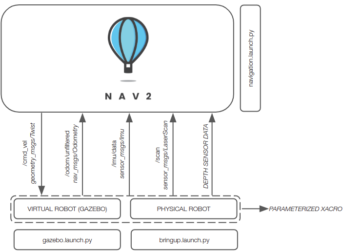
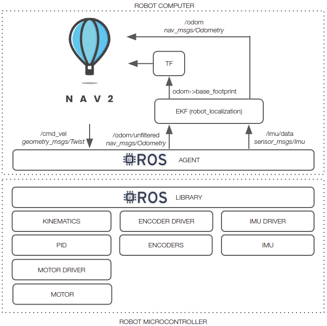
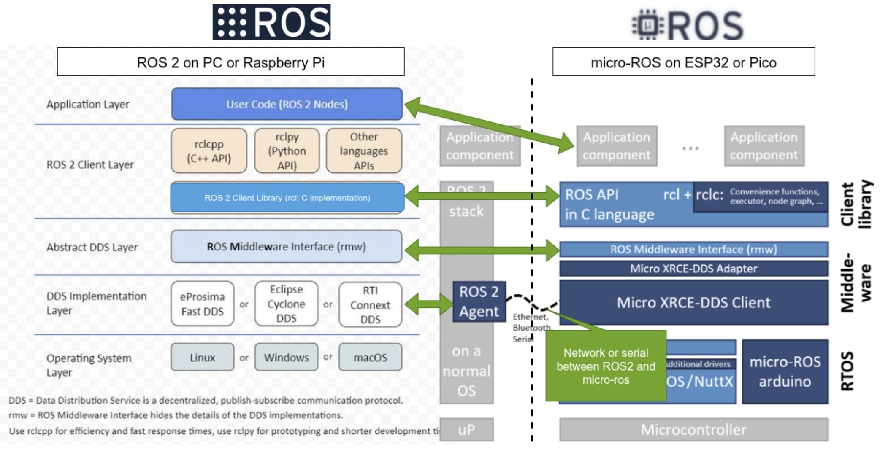

Linorobot2 Architecture¶
System Architecture¶
This section describes the system architecture within which a linorobot2 robot runs.
Physical Robot¶
The architecture of a system that includes a linorobot2 Physical Robot is shown below.
flowchart LR
subgraph M[Microcontroller]
RF[Robot Firmware]
end
RS[Robot Software];
W[Workstation]<-->|GUIs|RS
RS<-->|serial or wifi|RF
M-->Motors
M<-->Sensors
W-. Reprogram .->MThe Workstation provides the user a way to start Robot Software, as well as to visualize the robot and its data using ROS GUI tools like Rviz and rqt. It also runs the Robot Firmware build system (PlatformIO), and reprograms the Microcontroller with Robot Firmware updates.
The Robot Software includes linorobot2 packages from this repo, as well as the Nav2 navigation packages and other ROS packages. It is ROS software that runs the navigation algorithms that enable the robot to make maps and autonomously navigate using them. Robot Software may run on an onboard Robot Computer that uses a USB serial link to communicate with Robot Firmware. Alternatively, it may run on the Workstation and use wifi to communicate with Robot Firmware.
The Robot Firmware runs on the onboard Microcontroller, accepts motion commands from Robot Software, and translates them into hardware actions that turn the wheel motors. It also reads the sensors and passes their data back to Robot Software. Robot Firmware runs high-frequency real-time control loops with good predictability, offloading that task from the Robot Computer.
Simulated Robot¶
The architecture of a system that includes a linorobot2 Simulated Robot is shown below.
flowchart LR
subgraph G[Gazebo]
SR[Simulated Robot]
end
RS[Robot Software];
W[Workstation]<-->|GUIs|RS
RS<-->GAs with the Physical Robot, the Workstation provides the user a way to start Robot Software and the Gazebo physics simulator, as well as to visualize the robot and its data using ROS GUI tools like Rviz and rqt.
The Robot Software is the same as in a Physical Robot - it includes linorobot2 packages from this repo, as well as the Nav2 navigation packages and other ROS packages. It is the ROS software that runs the navigation algorithms that enable the robot to make maps and autonomously navigate using them. Robot Software and Gazebo may run on the Workstation, or up in the cloud.
The Gazebo simulator runs a simulation of the robot and its interactions with a simulated world. It has the same interfaces to Robot Software as the Physical Robot.
The fact that Gazebo provides the same interfaces as the Physical Robot enables it to simulate a "digital twin" of the Physical Robot. No changes in Robot Software are needed to switch between the Physical Robot itself and the Simulated Robot that mirrors the Physical Robot.
Architectural Goals¶
The architectural goals of linorobot2 and linorobot2_hardware are to enable ROS2 navigation, both on Physical Robot hardware and for a Simulated Robot running in a gazebo simulation, for a variety of differential-drive, skid-steer, and meccanum robots, and to do this with a high degree of parameterization of robot hardware characteristics and sensors and motor drivers.
This should result in reduced development effort for robot software and firmware.
Physical Robot hardware includes a Microcontroller running low-level high-frequency tasks in Robot Firmware and communicating to Robot Software on a Robot Computer and/or Workstation using the micro-ros transport. Micro-ros is central to the architecture, and enables Microcontroller firmware to flexibly subscribe and publish to ROS topics on the Robot Computer or Workstation, provide service servers, and generally be a part of the ROS node graph.
The architecture includes extension points for users to add customizations for their robots in such a way that they don't conflict with ongoing maintenance and upgrades to the linorobot2 packages. This enables upgrading linorobot2 software and firmware, hopefully with minimal impact to the user's robot software and configurations in many cases. Proper use of extension points also enables users to give back upgrades to the core linorobot2 software and firmware without disrupting their customizations.
Once the robot's URDF has been configured in the linorobot2_description package, users can easily switch between launching the Physical Robot and spawning the Simulated Robot in Gazebo.
Architecture¶
The figure below shows the major subsystems and launch files for running on real hardware and in simulation.

Assuming you're using supported sensors and motor drivers, linorobot2 automatically launches the necessary hardware drivers, with the topics being conveniently matched with the topics available in Gazebo. This allows users to define parameters for high level applications (ie. Nav2 SlamToolbox, AMCL) that are common to both virtual and physical robots.
The figure below summarizes the topics available after launching a connection to a hardware robot by running bringup.launch.py. It also shows the functions assigned to the microcontroller for physical robot control.

The diagram below shows a communication protocol stack view of Robot Software and Robot Firmware, and how they relate.

The software stack on the left half of the diagram shows the layers of Robot Software running on the Robot Computer. The software stack on the right half of the diagram shows the layers of Robot Firmware running on the Microcontroller. Conceptually, layers at a similar level in both stacks can be considered to communicate with each other. The layers are described below, starting from the bottom.
The Robot Software can be considered "ROS" software. The Robot Firmware can be considered micro-ros firmware.
OS layer¶
Robot Software (the ROS2 nodes) run on the Robot Computer operating system. It is built by colcon and launched by the user with ros2 launch and run commands, after the Robot Computer has booted.
Robot Firmware runs in the Arduino environment on the Microcontroller - there is no operating system. It is built by PlatformIO and starts as soon as the Microcontroller is powered on and boots.
DDS Implementation Layer¶
Robot Software uses one of several supported variants of DDS transport to pass messages between ROS nodes. The bringup launch file starts the ROS2 Agent which tries to establish communication with Robot Firmware.
Robot Firmware uses the Micro XRCE-DDS client to pass DDS messages between firmware layers above it and a ROS2 Agent running on the Robot Computer.
When Robot Firmware starts, the XRCE-DDS client attempts to establish communication with the ROS2 Agent, and waits until that handshake suceeds. Once the XRCE-DDS client has established communication with the ROS2 Agent, DDS messages can flow between Robot Software and Robot Firmware, and subscriptions and publications can be set up between Robot Software and Firmware.
Abstract DDS Layer¶
This layer is a thin shim which abstracts the differences between DDS implementations, so that the libraries in the ROS Client layer see a consistent interface to the DDS transport.
ROS Client Layer¶
This is the most important layer of the architecture - it provides the ROS semantics (publish, subscribe, create_timer, and many more) to application-level software and firmware above it. Importantly, the rcl (Ros Client Library) is the same code running on both the Robot Computer and the Microcontroller, which ensures the API for application software is consistent.
The rcl library provides a 'C' interface to both the Robot Software clients and Robot Firmware clients. However, Robot Software (ROS) provides language-specific shim libraries (rclcpp for C++, rclpy for python), whereas Robot Firmware does not. Therefore, applications in Robot Software are written to a C++ or Python interface spec, wherease applications in Robot Firmware are written to a C interface spec. Nevertheless, the same semantics (subscriptions, publications, timers, services) are maintained in both environments. For this reason, application code in Robot Software looks different than application code in Robot Firmware - they are written in different languages (C++ or python for software, C for firmware).
If you keep in mind that the same semantics are provided in the C++, python, and C environments, you can pretty easily understand all of them.
The rcl library in Robot Software can be considered to communicate with the rcl library in Robot Firmware in the sense that if a firmware client subscribes to a topic, the firmware rcl library ensures that its caller will get callbacks when a software client publishes to that topic.
An important aspect of the ROS Client layer is it includes interface message definitions. This means that all the standard ROS messages can be used by firmware, and custom interface message types defined using message-generation tools can also be used by firmware. Therefore it is possible to define robot-specific interface messages and use them in both Robot Software and Robot Firmware without any change to the message-passing layers.
Application Layer¶
The application layer is where Robot Software nodes communicate with robot-specific firmware. For example, navigation software can publish motion commands on the /cmd_vel topic to firmware that will operate the motor drivers, and firmware can publish robot data like odometry on the /odom topic to navigation software.
Micro-ros¶
Broadly, micro-ros is the firmware that runs in the Arduino environment and provides services to robot-specific application firmware.
linorobot_hardware¶
The linorobot2_hardware repo contains the application-layer part of Robot Firmware, and the build configurations that pull in micro-ros and Arduino to build a working firmware. It contains configuration files that allow customization of the application layer to your specific robot.
linorobot_hardware is in a separate repo from Robot Software because its build processes and operations are very different from ROS software. Nevertheless it is an integral part of a linorobot2 Physical Robot.